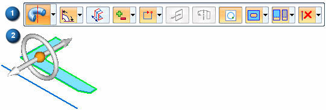
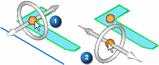
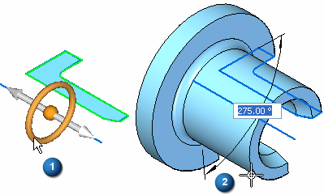
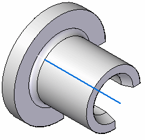

Constructing revolved features using the Select tool
In the synchronous environment, use the Select tool to construct revolved features. When you select a valid sketch element, such as a sketch region, the Extrude command bar and the extrude handle display by default.
You can click the extrude handle origin and drag it to a linear sketch element that defines the axis of revolution. The extrude handle changes to a revolve handle.
You can also place the axis on a handle in a space point.

You can also construct a synchronous revolved feature by selecting the Revolve command on the command bar.

The command bar updates to display the options for constructing revolved features (1), and the revolve handle appears (2).

To construct a revolved feature, you move the revolve handle to a linear sketch element, model edge, or to the center of a cylindrical face that defines the axis about which you want to revolve the sketch. In the following example, the axis element is separate from the sketch region that defines the cross section of the revolved feature.
You can move the revolve handle by clicking the handle origin (1), which attaches it to the cursor. You can then position the handle over the axis element. The revolve handle snaps into alignment with any linear elements. When aligned with the proper element, you can click to accept the handle position (2).

You can construct a revolved feature that is equal to or less than 360 degrees using the options on the Revolve command bar. After you define the options you want on the command bar, you can click the torus element on the revolve handle (1) to begin constructing the feature. The cursor shape changes to a cross hair, and a dynamic representation of the feature displays, along with a dynamic input box, so you can type an angular value for the feature (2).

To finish defining the feature, you can click to define the feature extent, select a keypoint, or type a value and press the Enter key.

The sketch elements used to define the feature are moved to the Used Sketches collector in PathFinder and hidden. The sketch dimensions are migrated to the appropriate model edges when possible.
Notice that since the axis element is separate from the sketch elements that define the cross section of the feature, that the axis element does not move to the Used Sketches list in PathFinder.
Create Live Section
On the command bar, use the Create Live Section option (1) to create a live section upon feature completion.

The option is on by default. All sketch dimensions migrate to the live section.
How do I
Construct a revolved extrusion: base featureConstruct a revolved extrusion or cutout: subsequent features
Edit the radius of a face
Move a group of faces radially along a direction
Learn more
Constructing revolved synchronous featuresLook up more details
Revolve commandRevolve command bar
Revolved Protrusion command bar
Radiate command
Radiate command bar